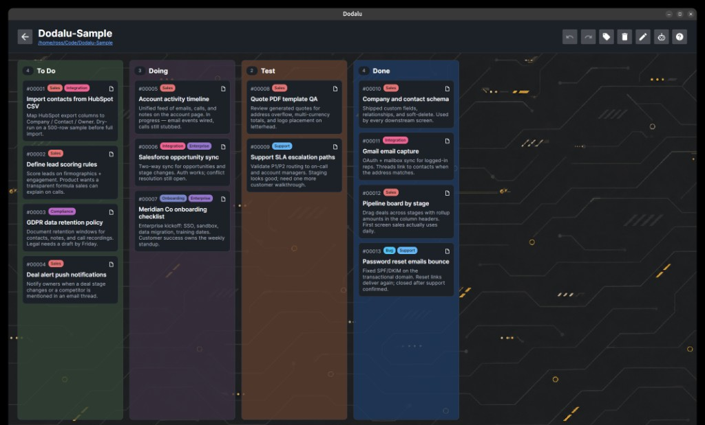
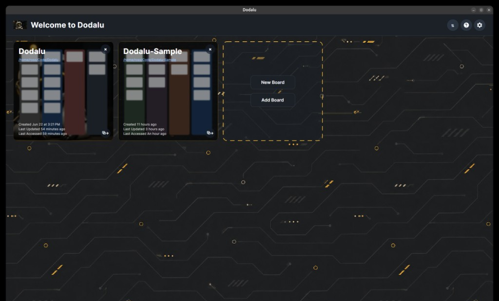
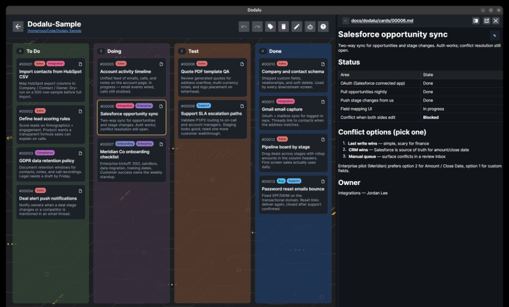

Shape the board
Columns, colors, wallpaper, and tags — tuned for the project in front of you, not a hosted workspace template.
Dodalu
A desktop board for folders you already have — columns and cards in local JSON, details in Markdown, no cloud kanban account required.

Dodalu keeps board content in dodalu.json at the project
root, with Markdown card docs in the tree. Appearance stays on this
machine — open any folder and get a board.

Columns, colors, wallpaper, and tags — tuned for the project in front of you, not a hosted workspace template.
Open a card’s Markdown in the docs pane: preview by default, source when you need it, or jump to your external editor.
Live board state stays git-ignored. Durable notes commit with the project like any other doc.
Select a card and the Markdown doc opens beside the board — same window, same folder, no separate wiki app.

Dodalu is not a chat host. An optional MCP server exposes board tools to clients you already use — Cursor, Codex, Copilot, Claude Desktop — while the desktop UI stays a calm place to move work by hand.
Register agent clients from the app. Guidance lands in the project. Conversations stay in your editor.
Windows Setup and Linux AppImage / .deb via Velopack.
Installed builds can check for updates from this site. Licenses are
optional support — buy at
pay.dodalu.com.
Beta channel packages are on the feed now · macOS not available yet · Snap remains local/manual for now · GitHub